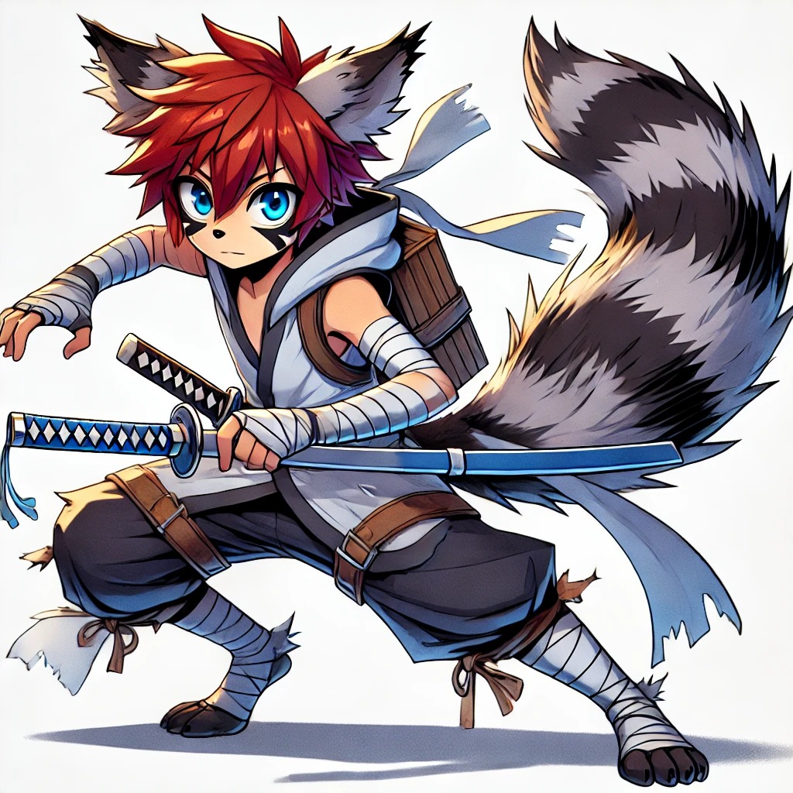
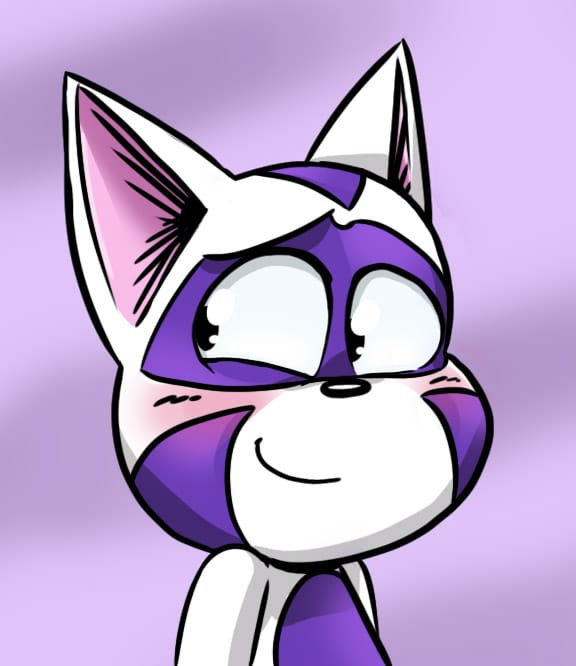

Dono
Magia del Comando, Magia della luce
Note
Durante la Guerra della seconda piaga Ajani fu una figura di spicco, carismatico, onorevole e coraggioso, riunì sotto il suo comando le innumerevoli tribù di Zooriadi che si erano andate a formare alla caduta dell’impero dei draghi.
Il suo intervento fu fondamentale in innumerevoli conflitti durante la guerra.
Sopravvisse a diversi attentati alla sua vita, il più eclatante fu quello perpetrato da Maliket, suo fratello minore, il quale venne sconfitto ed esiliato nelle terre maledette.
Conclusa la guerra, condusse i suoi soldati più fedeli a Fiore, un regno pacifico sorto da poco, e i vi fondò una delle primissime gilde, i Lions Pride.
Dono
Magia delle Fate
Note
L’attuale Master dei Lions Pride, una donna forte ma buona, anche se fatica a mostrarlo per via del suo temperamento spesso violento.
Nonostante trovi estenuante barcamenarsi fra le regole imposte dal consiglio e l’eccessiva esuberanza di alcuni membri di gilda, è sempre pronta a prendere le loro parti.
Nata e cresciuta con suo fratello fra gli Zooriadi nella città di Saguaro si è fatta strada con la forza in quel territorio privo di legge, attirando l’attenzione dei Lions pride.
Una volta all’interno, ha scalato i ranghi fino a raggiungere il rango S, per poi divenire vice Master ed infine Master alla dipartita del precedente.
Dono
Magia delle Tempeste, Magia della Distruzione
Rango
Eroe
Note
Viden è uno dei 4 maghi più potenti dei Lions Pride, come rango Eroe ha compiuto numerose gesta di grande valore che gli hanno valso questo titolo.
Viden è un uomo sulla cinquantina, padre di due figli che adora e felicemente sposato con con Lilia la locandiera che gestisce il Leone d’oro, la locanda più prestigiosa di Magnolia, frequentata principalmente dai maghi dei Lions pride.
Nonostante si possa pensare diversamente, per via dei suoi doni volti alla distruzione, Viden è un uomo pacato e gentile, dalla spiccata intelligenza; ama viaggiare da solo e benchè potrebbe spostarsi a grande velocità o tramite il teletrasporto, quando gli è possibile gli piace muoversi con il suo carretto in lunghi viaggi solitari.
Il fatto che ami la solitudine, non significa che disdegni la compagnia, da bravo padre di famiglia è sempre pronto a dispensare consigli e lasciar spazio di brillare alle nuove generazioni di maghi.
Dono
Magia degli Elementi
Rango
Eroe
Note
Anche se condivide il titolo di Rango eroe come altri 3 maghi dei Lions pride, Furia è senza dubbio il mago più potente dei Lions pride (se non consideri Arret).
Furia ama le sfide, e stima più di tutto un buon combattimento, per questo difficilmente accetta incarichi sotto il suo livello o incentrati sul dialogo.
Ama fare il bullo con i bulli, per questo il suo Hobby è stanare maghi oscuri o gilde oscure e raderle al suolo.
Questo suo disprezzo per le gilde oscure è anche dovuto al fatto che quando era piccola una gilda oscura le ha strappato via i suoi genitori, lasciandola sola con la sorella ed il nonno.
Come dal nome si può presupporre, il temperamento di Furia è “turbolento”, la sua pazienza è davvero limitata e tende ad usare la violenza per la risoluzione di qualsiasi fastidio, proprio per questo è particolarmente temuta in gilda, benchè ovviamente non metterebbe mai a rischio la vita (forse) dei propri compagni che considera come una famiglia (non ditelo in giro), apprezza essere temuta.
L’unico in gilda verso cui ha un atteggiamento apertamente affettuoso è Goetia, suo nonno che adora.
Un altro mago che ammira è Crucian, benchè questi metta a dura prova la sua pazienza con le continue avance nei suoi confronti, stima la sua forza e perseveranza e si continua a sorprendere di come riesca a rialzarsi ogni volta nonostante subisca i suoi colpi più potenti… che provi qualcosa di più della stima verso Crucian?
Dono
Take over Beast
Rango
Eroe
Note
Crucian è un umano cresciuto in una comunità di Rakin, in cerca di nuove sfide ed avversari da combattere si unì ai Lions pride, accompagnato da Rachet, suo fratello.
Crucian è impulsivo e spericolato e si lancia a testa bassa in ogni problema senza badare alle conseguenze o alle ferite che potrebbe subire, al contrario Rachet, la sua spalla (in tutti i sensi, visto che si trova spesso sulla spalla di Crucian), è prudente e molto timido, cerca spesso di far ragionare suo fratello e dargli consigli, ma raramente viene ascoltato, per questo è molto spesso costretto ad usare la sua magia per curarlo.
L’amore per le donne forti, ha fatto innamorare perdutamente Crucian di Furia e benchè il suo amore non sembra essere ricambiato, non è disposto ad accettare un no come risposta (probabilmente nessuno gli ha spiegato cosa sono le molestie sessuali).
Dono
Magia delle fate, Magia della strategia
Rango
Eroe
Note
Questa misteriosa figura ammantata ricopre il ruolo di Rango eroe, ma al contrario degli altri maghi nella gilda, la sua figura rimane avvolta nel mistero, solo in pochi conoscono la sua identità ed ancora di meno conoscono il gruppo che comanda e di cui fa parte.
Conosciuto come “K”, è al capo di una costola segreta dei Lions pride, chiamata Blind lions, i quali si occupano di svolgere attività nelle zone grige, quando la legge non è in grado di raggiungere i nemici dei Lions pride, i Blind lions hanno il compito di sbarazzarsi del problema, senza così mettere a repentaglio l’onore dei Lions pride.
Ai maghi più capaci e dal senso di giustizia “elastico”, che hanno mostrato una fedeltà assoluta ai Lions pride, viene proposto da K di unirsi ai Blind lions, qui non otterranno gloria e fama come nella gilda, ma faranno la differenza per cambiare il mondo.
K, altri non è che Arthur Firemane, il fratello gemello di Helga, il Master, con la quale collabora fianco a fianco per mantenere la gilda sicura.
Al contrario della sorella, K ricorre di rado alla violenza, resta sempre pacato, compie ogni azione ragionando e calcolando ogni mossa.
Dono
Magia della luna, Magia della morte
Rango
S
Note
I Kitsune sono una razza particolarmente affine alla magia, dotati di capacità magiche superiori a quelle delle altre razze, ma Zatis è sempre stato persino più dotato degli altri.
Per questa sua abilità innata, nel villaggio dove è nato e dalla sua famiglia è sempre stato viziato è coccolato, considerato come una benedizione degli dei.
Tutto gli era concesso, tutto gli era dovuto, il mondo girava attorno a lui e così, crescendo divenne un arrogante saccente privo di limiti.
Si spingeva sempre più in la nel testare fin dove potesse spingersi, finchè la gente al villaggio e la sua famiglia non potettero sopportarlo ulteriormente, venne scacciato dalla sua gente, esiliato.
Non avendo mai mosso un dito in tutta la sua vita, si trovò solo ed abbandonato nel mondo senza avere idea di come sopravvivere, la forza che fino ad ora gli aveva aperto tutte le porte non bastava più, non l’aveva coltivata ed ora, fuori dal villaggio, in un mondo di creature potenti lui era solo, mediocre.
Si unì ad una gilda oscura per tornare ad alimentare i suoi bisogni ed i suoi desideri sfrenati, ma li fra criminali e feccia si trovò dinnanzi ad uno specchio di ciò che era, inorridito da tale visione decise di cambiare vita. Un nuovo inizio giunse quando Viden, mago dei Lions pride giunse per debellare la gilda oscura, Zatis decise di aiutarlo.
Dopo qualche anno passato in prigione per i crimini commessi con la gilda oscura, Zatis si unì ai Lions pride, dove ebbe modo di cambiare vita, migliorandosi come persona e come mago, guadagnandosi la stima delle persone per meriti guadagnati non concessi dalla nascita, e benchè ancora fatichi a reprimere il suo atteggiamento odioso, si è affezionato molto ai Lions pride.
Dono
Magia Medica
Rango
S
Note
Eviris è un Elfo alto, specializzato nella magia curativa, nonostante ciò non possiede uno spiccato spirito altruistico, è spesso indifferente alla sofferenza altrui, anzi sembra quasi goderne, per questo al contrario di molti altri con il suo dono che si specializzano nell’arte medica, dedicandosi a curare le persone malate, Eviris ha deciso di divenire una maga, per stare a stretto contatto con persone che tendono a ferirsi ed a farsi ferire molto di frequente.
Nonostante le sue cure tendano ad arrivare in modo tardivo, nessuno che lei non desiderasse è mai morto sotto la sua tutela.
Dono
Magia dell’elettricità, Magia del Tempo
Rango
S
Note
Anche se sono davvero in pochi a saperlo, Zapper fu un vero precursore, di fatto egli fu il primo Exeedo a creare un legame con un Dragon slayer, dando inizio ad un rapporto indissolubile fra le due “Razze”.
Considerato una leggenda da tutti gli Exeedo nel mondo ed un punto di riferimento, è il figlio maggiore della regina Maple e primo erede al trono degli Exeedo.
Nonostante ciò Zapper è sempre stato contrario ad accettare titoli o onorificenze, non ambisce alla fama, desidera stare al fianco di Arret il proprio migliore amico.
La sua più grande paura è essere un peso per Arret, non essere abbastanza forte da riuscire a supportarlo adeguatamente, per questo si dedica anima e corpo nel migliorare se stesso e si infuria quando gli Exeedo vengono definiti “la mascotte del Dragon slayer” o la loro “spalla”, proprio per cambiare questa ideologia quando trova degli Exeedo che battono la fiacca, gli impone un rigido allenamento per far si che non si infiacchiscano.
Dono
Take over Demon
Rango
S
Note
La splendida Mira è il volto dell’accoglienza dei Lions pride, non è insolito trovarla al bancone a servire bevande ed alcolici ai vari maghi della gilda.
Anche se i suoi compiti non si limitano a questo, Mira gestisce al meglio la gilda, sistemando gli incarichi ricevuti, gestendo i visitatori esterni ed assegnando missioni per assicurarsi che nessuna resti incompiuta.
Dietro al carattere allegro ed amichevole di Mira però si cela un passato sofferto, il Dono in suo possesso le ha causato non pochi problemi, perseguitata dal culto di Helyos e ripudiata dalla sua famiglia in giovane età sfruttò i suoi poteri per fare del male, creando una gilda oscura si era convinta che il suo Dono la rappresentasse e non poteva esser altro che il mostro che tutti vedevano.
Ma un giorno incontrò Arret, non era spaventato da lei, ne dalla sua terribile fama ne dal suo dono, le disse che il suo potere non aveva scopi maligni ma era una sorta di “risposta immunitaria” dei Pilastri, i quali avevano generato quel tipo di Dono che era in grado di ferire i Demoni.
Scoprire che il suo Dono non aveva solo scopi malvagi ma stava a lei la scelta su chi essere, la fece riflettere, e pian piano abbandonò quella vita, trovando una famiglia accogliente nei Lions Pride.
Dono
Magia della Galassia
Rango
A
Note
Asriel proviene da una piccola famiglia di Pooka, proveniente dal monte Ebot, quando era molto piccolo la madre trovò un piccolo umano perduto fra i boschi e se ne prese cura.
Asriel e Chara, da allora sono cresciuti assieme come fratelli inseparabili, migliori amici per tutta la vita.
Presto fu evidente che la natura di Chara, mal si adattava alla tranquilla vita di montagna, la sua energia violenta andava reindirizzata in qualcosa di più costruttivo.
La partenza del fratello era inevitabile ma entrambi avevano stretto un legame così forte da non volersi separare, per questo Asriel prese la decisione di partire con Chara.
Dopo diversi viaggi si trovarono a Magnolia e vennero accolti dai Lions pride, dove si dimostrarono essere dei maghi formidabili.
Attualmente Asriel in diverse occasioni ha superato l’esame per passare al Rango S, ma continua a rifiutare la promozione in attesa che anche Chara riesca a superarlo.
Dono
Magia dell’omicidio
Rango
A
Note
La trama di Asriel e Chara è condivisa, posso solo aggiungere che Chara ha una vera e propria ossessione per i dolci, in particolare la cioccolata.
Il motivo per cui non è ancora riuscito a superare l’esame del rango S non è dovuto alle sue capacità combattive ma vista l’assenza di Asriel che mitiga il suo animo violento, durante l’esame scritto si annoia e prova ad uccidere gli esaminatori, venendo inevitabilmente squalificato.
Dono
Magia dei Sogni/incubi, Magia della corruzione
Rango
A
Note
Quando Tulki viveva con i Therian venne assegnato alla fazione degli Esploratori, i combattenti più formidabili a difesa del Pilastro della Natura e lui stesso si distingueva come il più capace.
Conosceva ogni albero ed ogni anfratto della foresta, amava la sua famiglia ed i suoi compagni ed avrebbe fatto qualsiasi cosa per difenderli.
I Quattro Pilastri un tempo erano legati da un unione così forte che permetteva ai Therian di ogni Pilastro di spostarsi da uno all’altro, unendo così anche le 4 tribù, ma quando il Pilastro dell’aria cadde, questo legame si ritorse contro i Therian ed i Pilastri, i Demoni cominciarono a sciamare direttamente nella casa dei Therian, superando le loro difese e prendendo d’assalto i Pilastri rimasti.
La magia dei Pilastri non permetteva a nessuno eccetto i Therian di avvicinarsi, perciò nessuno poteva accorrere in loro aiuto nel conflitto.
Vedendo i propri compagni cadere, Tulki prese una decisione drastica, un reato imperdonabile per i Therian, con una magia proibita distrusse il legame fra i Pilastri, chiudendo così il passaggio ai Demoni, ma isolando ogni Pilastro.
La magia proibita gli si ritorse contro, corrompendo la sua anima ed il suo Dono (che andò a sostituirsi con la magia della corruzione, qualcosa di assolutamente proibito dai Therian).
Benchè avesse salvato tutti, i Therian non potevano più accettare di averlo fra loro, il suo legame con il Pilastro era ormai reciso, e così i suoi fratelli recisero il loro legame con lui, tramite il rituale del Dimenticato, egli non poteva più interagire con loro, come un fantasma nessun Therian legato al Pilastro era in grado di vederlo, sentirlo o persino toccarlo.
Senza più la sua gente, solo nel mondo dei mortali, con una mentalità così lontana dalla sua viaggiò a lungo alla ricerca di una nuova casa, una nuova famiglia.
Benchè i Therian lo avessero ripudiato, però alcuni nel mondo erano venuti a conoscenza di quanto avvenuto, ed ammiravano il suo spirito di sacrificio, fra tutti Ajani, il fondatore dei Lions Pride, la nuova gilda di maghi, conclusa la guerra gli offrì di unirsi a loro, trovando così una nuova casa.
I Secoli passarono e Tulki compì molti viaggi, uno fra tutti fu a Shinnon, verso il Pilastro del fuoco, nonostante fosse passato molto tempo (anche se per un Therian immortale conta poco), cercava un modo di rimediare al danno fatto ristabilendo i rapporti fra le tribù di Therian, ma non venne accolto come sperava, venne scacciato ed incolpato anche li.
Eppure il viaggio non fu del tutto inutile, perché li incontrò Shin, un giovane ninja vittima di un tradimento, privo di una casa, cacciato dalla sua gente, non potè non rivedercisi e così (anche se non proprio consenziente) lo portò con se a Fiore, per dargli una vita nei Lions pride.
Dono
Magia degli spiriti celesti
Rango
A
Note
Ponyo un tempo aveva un altro nome ma nessuno lo conosce, si sa solo che fosse un mago formidabile, forse persino un Rango eroe, inebriato dal suo potere iniziò a divenire ambizioso, essendo un umano l’avanzare dell’età e l’avvicinarsi della morte iniziava a preoccuparlo, per questo dedicò tutti i suoi sforzi allo studio della magia temporale.
Il Mondo degli spiriti celesti era in un'altra dimensione e li il tempo agiva in modo anomalo, per questo iniziò a studiarlo, puntava ad ottenere il Dominio sul Tempo stesso.
La sua ambizione però si infranse quando al primo uso della magia temporale, si trovò dinnanzi a diversi Proto Arret.
In qualche modo sopravvisse, ma il suo potere e soprattutto il suo aspetto erano ormai irriconoscibili, era tornato ad essere un infante di appena un anno, manteneva ancora la sua mente ma faticava persino a muoversi e parlare.
I suoi spiriti gli obbedivano ancora ma il mana per richiamarli era troppo per la sua nuova condizione, si era trovato a dover ricominciare da zero.
Cambiò nome in Ponyo e ricominciò ad allenarsi per tornare alla sua antica forza, si accorse tristemente che nonostante il passare del tempo il suo corpo non cambiava, era bloccato nella forma di infante.
Si unì ai Lions pride con l’obbiettivo di studiare Arret e trovare una cura alla sua condizione, ma con il passare del tempo si è ormai rassegnato ed affezionato ai membri della gilda.
Dono
Magia dell’elettricità, Magia del Caos
Rango
A
Note
Derril viveva in una famiglia numerosa e molto povera, sotto il gioco di un ricco nobile che schiacciava la popolazione e le famiglie come la sua tramite i debiti.
I genitori di Derril morirono di fatica per il lavoro nel vano tentativo di saldare i loro debiti con il nobile.
Poi un giorno Mirajane con la sua banda di maghi oscuri giunse in città, eliminò il nobile e liberò tutte le famiglie dal suo giogo.
Derril rimase così ammirato da Mira, che la seguì lasciando tutto ed unendosi alla sua banda.
Quando Arret sconfisse il gruppo di Mirajane e la convinse di unirsi ai Lions pride, Derril la seguì, ed anche lui trovò una nuova famiglia ed un’occasione di fare del bene ed aiutare le persone come Mira aveva al tempo aiutato lui.
Purtroppo però si scontrò con la dura realtà, spesso i nobili malvagi erano protetti dalle leggi e loro non potevano fare nulla per fermarli, ma a lui non riusciva proprio a farselo andare bene.
In un’occasione con un nobile particolarmente malvagio, Derril non riuscì a trattenersi e lo aggredì, benchè non lo uccise, il Consiglio della magia decise che meritava l’arresto.
Venne cacciato dai Lions pride ma riuscì a fuggire ed evitare la prigione.
Ora Derril agisce come mago oscuro e gira per Fiore aiutando le persone sfuggendo alla legge, e benchè ufficialmente i Lions pride condannino le sue azioni, segretamente qualcuno alla gilda continua ad aiutarlo.
Dono
Magia dei libri
Rango
A
Note
Rhistel è un elfo del sole, proveniente da una famiglia di ferventi seguaci di Helyos, una lunga dinastia di Paladini e guerrieri.
Purtroppo però lui, al contrario dei suoi fratelli però nacque con una grave malattia che non gli permetteva di esporsi alla luce solare, a causa di questo era disprezzato dai suoi cari, considerato maledetto.
Per questa ragione Rhistel era segregato nella sua camera, per paura che la sua esistenza potesse ledere il buon nome della famiglia.
Solo la madre teneva a lui, per alleviare la sua solitudine gli portava libri di ogni tipo, così Rhistel sviluppò il suo amore per la lettura, in particolare lo affascinavano le storie d’avventura.
Crescendo però gli fu chiaro che le sue carenze nel fisico venivano ampiamente sopperite dalle sue eccezionali capacità magiche.
Un giorno decise di lasciare quella vita da emarginato e prendere in mano il suo destino, fuggì dalla sua famiglia e dopo tanto vagare raggiunse Magnolia, il clima mite della città giovava alla sua condizione.
Li scoprì i Lions pride i quali videro in lui un grande potenziale e lo invitarono ad unirsi.
Anche se ora Rhistel è un grande mago, il suo amore per i libri non è mai cessato, per questo nel tempo libero continua a gestire la collezione all’interno della gilda.
Dono
Magia della natura
Rango
B
Note
Loriel è un Elfa silvana, nacque all’interno della Foresta eterna nella più grande città degli elfi Dalun-nadaar, figlia dei Gran sacerdoti, i capi della città.
Grazie alla politica dei genitori, Dalun-nadaar si era da poco ed a fatica aperta verso le razze esterne, accettando sporadici visitatori dalle città umane e commerciando con esse.
All’età di 40 anni (una bambina per gli elfi) però, la città venne attaccata da una gilda oscura molto potente, molti elfi rimasero uccisi o catturati, fra cui i suoi genitori, quelli che sopravvissero incolparono la loro apertura per questo attacco.
Al potere dopo la scomparsa dei genitori, salì Lavell Verdefoglia, la sorella maggiore, la quale decise di abbandonare il retaggio della famiglia e condurre gli elfi sopravvissuti nel folto della foresta, dove rifondarono la città con il fermo divieto di avere contatti con le razze esterne.
A Loryel però la città stava stretta, non le andava bene scappare e basta, lasciando impuniti i criminali, ed abbandonare quella società per cui i genitori avevano combattuto, perciò, decise di partire, abbandonare la sua gente per andare a vivere con gli umani.
Lavell non le impedì di andarsene, ma gli consigliò di recarsi a Magnolia, dove si trovavano i Lions pride, il Master Helga era un nome piuttosto conosciuto e rispettato all’interno della foresta, e probabilmente l’avrebbero aiutata.
Così lei e suo fratello Daylor partirono, alla volta di Magnolia.
Loryel ha un carattere allegro e pieno di energia, riesce a vedere il buono in ogni persona e a trovare sempre il lato positivo, è molto raro vederla abbattuta, anche nei momenti più difficili.
Dono
Magia della roccia
Rango
B
Note
Daylor è il fratello gemello di Loryel, ma nonostante il loro aspetto sia molto simile, il loro carattere è agli antipodi, mentre la sorella tende a gettarsi a capofitto nelle situazioni e gestire eventuali problemi quando se li trova davanti, Daylor è un tipo serioso e razionale, che ama ragionare bene su ogni azione ed elaborare un piano prima di agire.
Il suo carattere taciturno è accentuato dalla loquacità della sorella, per questo può sembrare scontroso a primo impatto, ma non gli dispiace la compagnia.
Daylor ha un forte senso del dovere e non aveva intenzione di lasciare la sua città natale, benchè gli piacesse l’idea di andare all’avventura, sapeva che come figlio della famiglia reggente, i suoi doveri erano prima di tutto verso la città, eppure, l’idea di lasciare andare Loryel nel mondo esterno lo terrorizzava.
Era dilaniato dalla decisione da prendere, perciò quando la sorella maggiore Lavell, il nuovo Gran sacerdote a capo della città gli ordinò di accompagnare Loryel nel suo viaggio, ne fu sollevato; la sorella sapeva che Daylor non è il massimo nel prendere le decisioni, sarebbe potuto rimanere a rimuginarci per anni.
E così entrambi partirono, anche se ancora giovani ed inesperti, si sono già dimostrati maghi molto capaci.
Dono
Nessuno
Rango
B
Note
Harmstrong è sempre stato la rappresentazione fisica del “se lo vuoi, puoi farlo”.
Anche se nato senza un dono, Harmstron aveva sempre ammirato i Maghi, aiutare i più deboli, intervenire nel momento più buio per portare una luce di speranza, era qualcosa alla quale anche lui aspirava, e benchè chiunque, compresa la famiglia continuavano a ripetergli che divenire un mago fosse un sogno irrealizzabile per lui, non si arrese.
Non potendo allenare la magia, rafforzò il suo corpo, giorno e notte si sottoponeva ad allenamenti rigorosi, iniziò ad allenarsi con le armi da autodidatta, poiché nessuno era disposto ad allenare uno senza magia.
Iniziò a spargersi la voce di un pazzo senza magia che volesse diventare mago, era divenuto un fenomeno, deriso ed a volte persino preso di mira dalle persone o dai maghi per il suo sogno irrealizzabile, ma nulla lo fece vacillare, finchè, un’anziana signora, ammirata dalla sua determinazione, non lo invitò a sottoporsi al suo allenamento, sarebbe stato difficile, ma sarebbe divenuto il miglior combattente.
La donna era Brighitte, anche detta il comandante d’acciaio, sotto la sua guida formidabile Harmstrong divenne il guerriero che è oggi, riuscì a vincere il torneo dei Lions pride, sconfiggendo decine di maghi e si guadagnò il rispetto dei propri compagni, per la sua forza ma soprattutto per il suo animo gentile.
Dono
Magia dei legami, Magia dei fiori
Rango
B
Note
Nasira è una maga promettente, e dall’aspetto provocante, divenne una maga non per senso di giustizia o per fama, ma per denaro.
Era abile e sapeva di esserlo, non le interessava fare giustizia o aiutare il prossimo, aveva puntato ai Lions pride come gilda in cui entrare solo per ottenere gli incarichi più redditizi.
Con il suo carattere arrogante e provocatorio, non si era integrata con il resto dei membri di gilda, si divertiva a punzecchiarli e causare conflitti, per questo in molti chiesero ad Helga di allontanarla, ma questa vedeva del potenziale in lei, perciò, decise di affiancarla al mago che più rappresentasse lo spirito della gilda ed il suo diretto opposto, Harmstrong.
Il suo carattere sempre gioviale ed allegro, il suo eccessivo senso dell’onore ed il suo perenne sorriso, le davano sui nervi, passare tutto quel tempo con lui era una tortura, i continui consigli su come comportarsi erano estenuanti, eppure, con il passare del tempo, quando capitava di andare in missione senza di lui, si accorse che le mancava.
Lei era stata con innumerevoli uomini e donne, eppure non aveva mai provato quello che ora provava per Harmstrong, si accorse che effettivamente era cambiata, apprezzava la compagnia dei suoi compagni, agiva per giustizia non per denaro… si sarebbe dichiarata a lui, avrebbe condiviso con lui i suoi sentimenti, eppure ne aveva paura, era sempre stata una donna così forte, come poteva temere una cosa così semplice? Temeva il suo rifiuto…
Ma non avrebbe mai saputo cosa gli avrebbe risposto… in una missione, per mano del Circo nero Harmstrong perì, per proteggere i suoi compagni, tipico di lui… l’unico amore mai provato, portato via… non le restava che l’odio… avrebbe dato la caccia ad ogni membro del Circo nero e lo avrebbe fatto a pezzi con le sue mani.
Dono
Magia dei Gadget
Rango
C
Note
“Stupido come un Kovolt” questa è un detto comune fra la gente di Fiore, a dimostrazione che i Kovolt tendono ad essere creature sempliciotte, facilmente manipolabili, adatte al lavoro manuale piuttosto che quello mentale.
Lou è la dimostrazione di quanto tutto ciò sia solo un pregiudizio, fin da cucciolo era dotato di una spiccata intelligenza, grazie alla sua magia era in grado di creare invenzioni incredibili.
Aiutava il suo villaggio nel lavoro dei campi, e nell’irrigazione tramite le sue invenzioni.
Un giorno, nel suo villaggio si insediarono un paio di maghi neri, intenzionati a fare da padrone, approfittandosi del villaggio isolato e privo di una vera e propria guardia cittadina.
La gente del villaggio provò a scacciarli con la forza, ma erano contadini, non potevano nulla contro dei maghi esperti, per questo il villaggio riunì i fondi ed inviò una richiesta d’aiuto al consiglio.
Ma Lou non ci stava, non sarebbe rimasto a guardare nella speranza che qualcuno accorresse in suo aiuto, si chiuse nello scantinato per creare qualcosa che avrebbe potuto aiutarlo contro i maghi oscuri.
Quando uscì dallo scantinato, era all’interno di un Robot meccanizzato dall’aspetto canino, il K9, armato di tutto punto, fronteggiò i maghi oscuri.
Quando Arret e Zapper giunsero sul posto, intenzionati a risolvere l’incarico, trovarono un cucciolo di Kovolt che scodinzolava trionfante su due Maghi oscuri legati e molto arrabbiati.
Non ottennero la ricompensa quel giorno, ma tornarono a casa con un nuovo amico, ed un futuro formidabile mago.
Dono
Magia Ninja
Rango
C
Note
Shin nacque a Shinnon, venne cresciuto come un figlio da Kyoshi, il maestro a capo della “Stella nera” una forza speciale di Ninja al servizio dell’imperatore.
A causa di un tradimento da parte di Zankokuna, uno dei membri più vicini al maestro, l’imperatore venne ucciso e così Kyoshi assieme a moltissimi membri della “Stella nera”, i sopravvissuti vennero accusati dal nuovo imperatore di essere dei traditori, braccati e giustiziati.
Shin avrebbe fatto la stessa fine se non fosse stato per la fortuita presenza di Tulki, il quale decise di salvarlo.
Benchè Shin non desiderasse altro che vendetta verso coloro che lo avevano tradito, portandogli via tutto ciò che gli era caro, Tulki lo portò via da Shinnon, costringendolo ad unirsi ai Lions pride, dandogli così una nuova famiglia ed un motivo per cui continuare a vivere.
Durante il periodo nei Lions pride, si è accorto di quanto fosse debole rispetto ai suoi compagni e gli altri maghi, perciò, senza mai perdere il desiderio di vendetta, ha continuato ad allenarsi e migliorarsi.
Così ha preso l’importante decisione che prima di andare a cercare vendetta, sarebbe riuscito a sconfiggere il mago più odioso che esista, Perseus, per lavare via l’onta della sconfitta.
(Perseus merda)
Dono
magia dei dolci
Rango
D
Note
Nato a Peperomia, un piccolo paesino di pescatori, da una famiglia di Pescatori, ci si sarebbe aspettato che anche lui divenisse un pescatore, dopotutto, il destino di un Lontride è quello di catturare pesci, eppure, il destino aveva altri piani per Mint, infatti fin dalla nascita detestava il pesce, odiava l’odore, il sapore gli dava la nausea e la pesca, lo annoiava.
Lui bramava l’avventura, voleva aiutare gli altri, adorava vedere le persone felici, per questo grazie al suo dono dispensava dolci a chiunque ne volesse.
Il suo paesino aveva ben due gilde di maghi ed ebbe la fortuna di venir ammesso ad entrambe, prima da una e poi dall’altra, anche se non brillava d’intelligenza capiva di venir sfruttato, non lo consideravano un mago, ma più un tuttofare sottopagato, ma era sempre meglio che pescare.
Le gilde però entrarono in conflitto ed una di esse, i Crazy raptors, venne smantellata, ed i Mighty boar presero il suo posto.
Anche loro lo trattavano come una ruota di scorta, ma ad una certa gli assegnarono un incarico, il primo incarico, trovare la nipote del Master.
Nella sua avventura, però conobbe i Lions pride, una gilda di veri maghi, che lo trattavano con rispetto e lo invitarono ad unirsi a loro, e da lì, l’avventura di Mint pepper ebbe inizio.
Dono
Magia della Vita
Rango
D
Note
Quando Osin nacque, la sua famiglia era sotto il gioco di Nowels già da molto tempo, anche se di fatto non erano schiavi, i contratti di lavoro ed i debiti che li legavano al nobile erano forse peggio della schiavitù.
Dotato di uno spirito d’iniziativa ed un animo meno sottomesso degli altri Pooka, Nowels decise di nominarlo suo attendente, e capo dei Pooka, un po' per tenerselo vicino e sfruttarlo, un po', perché concedergli una posizione di superiorità rispetto agli altri lo avrebbe fatto odiare, stroncando sul nascere qualsiasi moto di ribellione che Osin avrebbe potuto suscitare negli altri.
Con il passare del tempo, Nowels cominciò a sviluppare un perverso affetto nei confronti di Osin, anche se era sottomesso come gli altri, vedeva nei suoi occhi una scintilla di odio o forse speranza, perciò prese come sfida personale quella di spezzarlo, si divertiva a seviziarlo con ogni mezzo possibile, dandogli compiti ingrati, facendogli indossare vesti degradanti, picchiandolo e torturandolo; mentre nel frattempo la sua gente lo disprezzava, considerandolo dalla parte del padrone, Osin cercava di sfruttare il suo ruolo da attendente aiutando di nascosto la sua gente, alleggerendo i turni, facendo arrivare più cibo e prendendosi la colpa di quegli errori.
Quando giunsero i Lions pride, per la prima volta Osin venne trattato con rispetto e gentilezza, perciò, quando Nowels gli ordinò di tradirli il suo cuore andò in frantumi, non voleva farlo ma poi la sua famiglia ne avrebbe pagato le conseguenze.
Nonostante ciò però il gruppo non solo perdonò il suo tradimento ma riuscirono a sconfiggere Nowels e salvare la famiglia.
Benchè ancora lo odino, è felice di sapere che ora stanno bene, ed anche lui, con i Lions pride ha trovato una nuova famiglia di persone gentili e verso cui nutre un profondo rispetto, in particolare verso Ofelia, la quale più di tutti ha mostrato gentilezza nei suoi confronti.
Dono
Dragon slayer del suono
Rango
E
Note
Alla scomparsa di Noizarus, suo padre, come molti altri Dragon slayer, anche Din si mise in viaggio alla sua ricerca.
Giunto ad Oleus con facilità si unì alla gilda degli Astral Nahrwals, sotto richiesta specifica del master Crystal Wise, ma era una trappola, si trovò invischiato nella tela del Master ed assuefatto dalla Droga, l’Ambrosia Purpurea che Crystal gli propinava costantemente, rendendolo sottomesso e dipendente.
Assieme ad una cerchia ristretta di altri maghi erano un giocattolo ed uno strumento del Master, che si divertiva con loro in modi a dir poco inappropriati e li usava come armi per i suoi scopi.
Quando però a causa dei Lions pride, il Crystal Wise dovette darsi alla fuga, portò con se la sua cerchia ristretta di maghi sotto il suo controllo, fatta eccezione da Lumia, il suo Exeedo, il quale era riuscito a sopprimere grazie alla sua magia l’effetto della droga.
Din non poteva però sopportare il pensiero che così tanti altri suoi coetanei fossero rimasti soggiogati al Master, scomparsi nel nulla, e non fidandosi degli Astral Nahrwals, che avevano permesso tutto ciò, si diresse dai Lions pride, gli unici che erano riusciti fino ad ora ad ostacolare i piani del Master.
Venne accolto con piacere fra le loro fila e nella prima missione svolta, scoprì che i seguaci di Eros fornivano di Ambrosia scarlatta il Master.
Anche se l’incarico si è concluso con un vicolo cieco, Din non si arrende, è intenzionato a dare la caccia a Crystal Wise e farle pagare per il male che ha fatto.
Dono
Magia del sangue
Rango
E
Note
Lumia è l’Exeedo di Din, la sua guida ed il suo miglior amico
Dono
Dragon slayer del tempo
Rango
E
Note
Indubbiamente il più debole mago dei Lions pride, passa le sue giornate a bighellonare per la città di Magnolia o al Bar di gilda, ama chiacchierare, bere e mangiare.
Una vera spina nel fianco per il Master e Zapper, che in tutti i modi lo spronano ad imbarcarsi in faticose missioni.
Eppure verso alcuni membri della gilda gode di un notevole rispetto, sicuramente immeritato.
Sono sicuro che non ci sia nulla sotto questo personaggio, è solo pigro, sicuramente non è colui che fino ad adesso ha tenuto in ostaggio l’intera realtà in un loop costante, e non è sicuramente uno dei maghi, se non il mago più potente che esista su Eltharia… giusto? O forse…